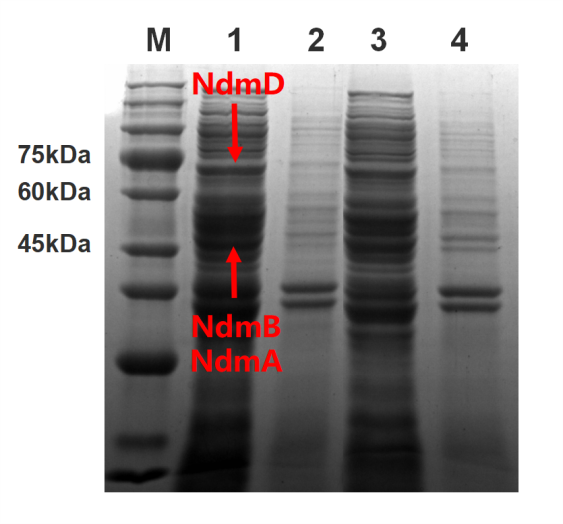
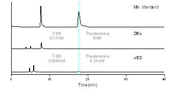
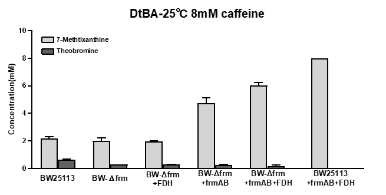
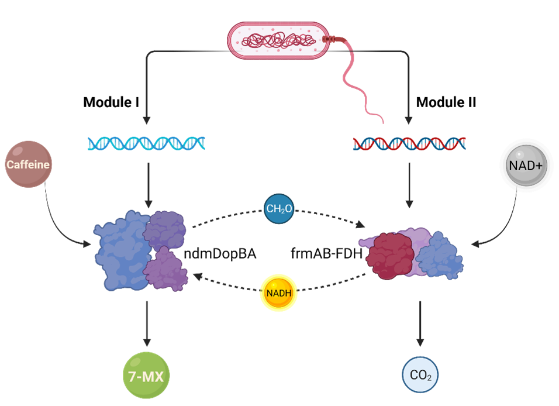

Introduction
Nowadays, myopia is becoming more and more popular worldwide, while the conventional treatments
of myopia have
multiple drawbacks. When exploring previous literature, we noticed that 7-methylxanthine (7-MX)
was demonstrated
to have effects in preventing and mitigating myopia with minimal side effects. However, the
current production
of 7-MX depends on its chemical synthesis, which entails multiple limitations, including low
yield, high cost,
and environmental pollution. As a result, we planned to use coffee residues as the raw materials
to synthesize
7-MX through engineered Escherichia coli (E. coli) to achieve the reuse of coffee grounds. In
order to examine
the feasibility of our idea, we investigated to develop both a caffeine degradation system and a
cofactor
regeneration system, followed by data analysis.
Verification of NdmA/B/D effects
Our team noticed a gene pathway in the Pseudomonas putida CBB5 that converts caffeine to 7-MX.
The critical
genes in this pathway include the ndmA, ndmB and ndmD. NdmA and NdmB can remove the two methyl
groups at the N-l
and N-3 positions of caffeine, respectively, and NdmD consumes reducing power to promote these
demethylation
reactions.
We synthesized the ndmA, B and D genes and obtained their coding sequences by PCR. Then, we
ligated them into
the expression vector using the Golden Gate assembly. After the successful construction, the
plasmid was
transformed into E. coli BW25113 to obtain the ABD strain. Subsequently, we induced the ABD
clones and validated
the expression of the ndmA, B and D genes using SDS-PAGE analysis (Fig. 1).

Figure 1.SDS-PAGE verification of protein expression by the ABD strain.
After three-step optimization from the ABD circuit to the DtBA circuit, we demonstrated that the
NDM enzyme
system was functional and efficient in caffeine degradation to produce 7-MX. The synthesis of
7-MX was achieved,
and the accumulation of theobromine in the process was appropriately adjusted (Fig. 2).

Figure 2.Verification of 7-MX and theobromine production by the DBA and ABD strains when
analyzed by the whole-cell catalysis
using HPLC.
After three-step optimization from the ABD circuit to the DtBA circuit, we demonstrated that the
NDM enzyme
system was functional and efficient in caffeine degradation to produce 7-MX. The synthesis of
7-MX was achieved,
and the accumulation of theobromine in the process was appropriately adjusted (Fig. 2).
Verification of the cofactor regeneration system
In the design module, we mentioned that frmA and frmB can oxidize formaldehyde to produce formic
acid.
Furthermore, FDH oxidizes formic acid to generate CO2 and converts NAD+ to NADH, which can
provide reducing
power to promote caffeine-to-7-MX conversion.
Based on previous literature, two genes in the E. coli genome, frmA and frmB, are involved in
degrading
formaldehyde. To verify whether the endogenous expression of the frmAB could be sufficient to
dehydrogenate
formaldehyde produced by caffeine demethylation, we knocked out the frmA/B genes in the E. coli
genome to create
the BW-Δfrm strain. Next, we transformed the plasmids containing frmAB, FDH, or both into the
BW25113- Δ frm
strain with the DtBA circuit. Then, we transformed the DtBA circuit and went through induction
and whole-cell
catalysis procedure using the typical E. coli strain (BW25113) and BW-Δfrm strain for
comparison. Finally, the
catalytic products were detected by HPLC (Fig. 3).

Figure 3.Comparison of the 7-MX productions by the BW25113, BW-Δfrm, BW-Δfrm+FDH,
BW-Δfrm+frmAB, BW-Δfrm+frmAB+FDH and
BW25113+frmAB+FDH clones determined by the whole-cell catalysis under the condition of 25C, 10
OD600 and 8mM caffeine
for 18 h.
Based on the HPLC results of these five strains, the frmA/B in E. coli played a limited effect,
and FDH alone
did not improve the yield of 7-MX. With the introduction of exogenous frmAB and FDH, a
significantly enhanced
yield of 7-MX was observed, proving the efficacy of the cofactor regeneration system in
improving 7-MX
production.

Figure 4.The schematic diagram for the overall interaction between the DtBA enzymes and
cofactor regeneration system.